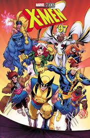

ALERTA: CONTÉM SPOILERS.
A história dos X-Men nos quadrinhos é vasta e cheia de reviravoltas desde sua criação em 1963 por Stan Lee e Jack Kirby. Os quadrinhos dos X-Men tratam de temas como preconceito, exclusão social e aceitação, com os mutantes servindo como uma metáfora para minorias marginalizadas. Aqui está um resumo dos principais momentos e arcos dos quadrinhos dos X-Men:
Origem e Primeira Formação dos X-Men (1963)
Os X-Men foram introduzidos como mutantes, seres humanos nascidos com habilidades especiais devido a uma evolução genética chamada Gene X. O Professor Charles Xavier fundou uma escola para jovens superdotados para ensinar esses mutantes a controlar seus poderes e protegê-los de um mundo que os temia e odiava.
Os primeiros membros da equipe eram:
Ciclope (Scott Summers) – Líder de campo com a habilidade de disparar rajadas ópticas.
Jean Grey – Telepata e telecinética.
Fera (Hank McCoy) – Superforça e agilidade.
Homem de Gelo (Bobby Drake) – Capaz de controlar e gerar gelo.
O principal inimigo da equipe era Magneto, um mutante poderoso com o poder de manipular magnetismo. Ao contrário de Xavier, que acreditava na coexistência pacífica entre humanos e mutantes, Magneto via os humanos como uma ameaça e acreditava que os mutantes deviam governar o mundo.
2. A Nova Formação (1975) – "Giant-Size X-Men"
Embora os X-Men originais tenham enfrentado uma série de vilões e desafios, a popularidade dos quadrinhos começou a diminuir no final dos anos 60. Então, em 1975, o escritor Len Wein e o artista Dave Cockrum revitalizaram a franquia com a introdução de novos personagens no famoso quadrinho "Giant-Size X-Men 1".
A nova equipe incluiu:
Wolverine (Logan) – Um mutante com habilidades de cura, sentidos aguçados e garras de adamantium.
Tempestade (Ororo Munroe) – Capaz de controlar o clima.
Noturno (Kurt Wagner) – Um mutante que pode se teleportar.
Colossus (Piotr Rasputin) – Capaz de transformar sua pele em aço orgânico.
Banshee, Ave de Trovão, Solar e outros.
Esse relançamento deu início à era mais popular dos X-Men, com Chris Claremont assumindo o papel de roteirista e criando algumas das histórias mais icônicas dos quadrinhos.
3. Saga da Fênix (1976-1980)
Uma das histórias mais conhecidas dos X-Men, "A Saga da Fênix", gira em torno de Jean Grey. Durante uma missão no espaço, Jean é exposta a forças cósmicas que despertam nela o poder da Fênix, uma entidade cósmica quase onipotente. Inicialmente, Jean é vista como a Fênix Branca, uma força do bem.
No entanto, os poderes da Fênix começam a corrompê-la, e ela se transforma na Fênix Negra, uma entidade destrutiva que ameaça toda a galáxia. A transformação de Jean e sua eventual morte sacrificial nas mãos de seus companheiros X-Men são momentos marcantes na história dos quadrinhos, e o arco é considerado uma das maiores histórias de super-heróis de todos os tempos.
4. Dias de um Futuro Esquecido (1981)
Esse arco icônico, escrito por Chris Claremont e desenhado por John Byrne, explora um futuro distópico onde os mutantes foram quase exterminados por robôs caçadores de mutantes chamados Sentinelas. Neste futuro, Kitty Pryde (Lince Negra) envia sua mente ao passado para avisar os X-Men sobre os eventos que levariam à criação desse futuro horrível.
A história aborda temas de autoritarismo, genocídio e o medo de diferenças, temas recorrentes nos quadrinhos dos X-Men.
5. A Era do Apocalipse (1995)
Em um dos eventos mais ambiciosos da Marvel, "A Era do Apocalipse" reimaginou o universo dos X-Men em uma realidade alternativa onde Apocalipse, um dos primeiros e mais poderosos mutantes, conquistou o mundo. Essa linha do tempo foi criada quando o filho de Xavier, Legião, viajou no tempo para matar Magneto, mas acabou matando o próprio Charles Xavier por acidente.
Sem Xavier, os X-Men são liderados por Magneto, mas enfrentam um mundo onde Apocalipse governa com mão de ferro. Esse arco apresentou versões alternativas dos personagens e foi amplamente aclamado pelos fãs.
6. Genosha e o Massacre Mutante
Em várias histórias, os mutantes enfrentam a perseguição humana em escala global. Um dos maiores exemplos disso é o arco que envolve a ilha-nação de Genosha, onde os mutantes são escravizados e tratados como cidadãos de segunda classe.
Também houve o Massacre Mutante, onde um grupo de assassinos chamados Carrascos, sob o comando de Sr. Sinistro, atacam os Morlocks, uma comunidade de mutantes marginalizados que viviam nos esgotos de Nova York. Muitos mutantes foram mortos, e o evento teve repercussões profundas nas histórias dos X-Men.
7. Dinastia M (2005)
Esse evento foi um divisor de águas. Após sofrer um colapso mental, Feiticeira Escarlate (Wanda Maximoff), uma mutante com poderes de alterar a realidade, cria um novo mundo onde os mutantes são a espécie dominante. No entanto, quando a realidade é restaurada, ela pronuncia as palavras "No more mutants" ("Chega de mutantes"), o que resulta na perda dos poderes de milhares de mutantes ao redor do mundo, reduzindo drasticamente o número de mutantes na Terra.
8. Krakoa e a Nova Era dos Mutantes (2019-presente)
Em uma fase recente dos quadrinhos, os mutantes criam uma nova nação soberana na ilha viva de Krakoa, onde todos os mutantes são bem-vindos, incluindo antigos inimigos como Apocalipse e Magneto. Sob a liderança de Xavier, Magneto, e outros, os mutantes desenvolvem uma cultura própria e uma política de independência. Esta nova fase, chamada "Dawn of X", apresenta os mutantes como uma força global, mudando drasticamente a dinâmica entre eles e o resto do mundo.
Ao longo dos anos, os X-Men enfrentaram muitos desafios, mas seus principais temas continuam sendo:
Discriminação e preconceito.
A luta entre a coexistência pacífica (Xavier) e a autodefesa agressiva (Magneto).
Questões de identidade e pertencimento.
O conflito entre o indivíduo e a sociedade.
Os quadrinhos dos X-Men continuam a ser uma das franquias mais influentes da Marvel, sempre se reinventando para refletir questões sociais e políticas contemporâneas.